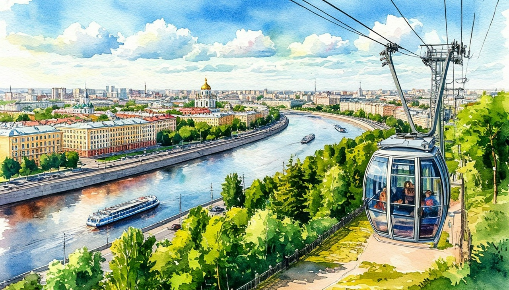

Весёлый Уикенд: Нижний-Новгород + Городец

Даты тура: 29 мая - 1 июня | 11 - 14 июня | 3 - 6 июля | 7 - 10 августа | 21 - 24 августа
Стоимость тура:
- 26 800 р. - взрослый
- 26 400 р. - пенсионеры/студенты/школьники
- по запросу - одноместное размещение
По программе:
- - Обзорная экскурсия по Нижнему Новгороду
- - Экскурсия в Нижегородский Кремль
- - Посещение усадьбы Рукавишниковых
- - Теплоходная прогулка по Оке и Волге (за доп.плату/по желанию)
- - Экскурсия в Музей истории «ГАЗ» (за доп.плату/по желанию)
- - Посещение зоопарка "Лимпопо"
- - Свободное время в парке "Швейцария"
- - Экскурсия в древний Городец — город мастеров (за доп.плату/по желанию)
Программа тура:
1 день: Отправление
- 22.00 - выезд из Костромы от ТРЦ "РИО". Ночной переезд.
2 день: Нижний Новгород
- Прибытие в Нижний Новгород.
- Завтрак.
- Обзорная экскурсия "Нижний - карман России". Сейчас Нижний Новгород перестал быть «третьей столицей», зато тут же получил звание «Столица Поволжья», и теперь является центром Приволжского Федерального округа и одновременно – крупнейшим его городом. Нижний — город-"миллионник", пятый по численности населения город в России — с большим числом достопримечательностей и памятников архитектуры.
- В ходе экскурсии Вы увидите площадь Минина и Пожарского, Александровский сад, Чкаловскую лестницу, прогуляетесь по главной пешеходной улице города, называемой в народе "нижегородский Арбат" – Большой Покровской, увидите Благовещенский монастырь, Рождественскую церковь, Стрелку – место слияния Волги и Оки, собор Александра Невского, Нижегородская ярмарка.
- Экскурсия в Нижегородский Кремль – уникальный памятник русской фортификационной архитектуры начала XVI в., в ходе которой Вы узнаете все тайны Кремлевских башен.
- Посещение Палат купца Афанасия Фирсовича Олисова - нижегородца, прославившегося благотворительностью и строительством храмов и сыгравшего в судьбе города значимую роль. Именно он в 1670-х годах спас многих своих земляков от смерти, когда над Нижним Новгород нависла угроза разорения: накопился многолетний долг посадских казне. Именно Афанасия Олисова просил тогда земский староста бить челом самому государю Федору Алексеевичу о бедах и нуждах Нижегородского посада, так много сделавшего для Отечества во времена Смуты XVII века и способствовавшего избранию на Российский престол Романовых.
- В самом сердце города, на Ильинской горе, возвышается прекрасное здание в стиле славянской архитектуры. Это историческое сооружение, построенное еще в далеком 17 веке, поражает своей изящностью и красотой. Строение отличает редкие для Нижнего Новгорода элементы старорусской архитектуры: фасады палат украшены тонкими изразцами, выполненными в виде печатных пряников; на каменных наличниках и арках можно увидеть замысловатые рисунки. Вы можете увидеть много интересного внутри: спальня купца, старинные предметы, живописные картины, сувениры, матрешки, товары народного потребления и многое другое.
- Обед.
- Размещение в отеле.
- Свободное время в Нижнем Новгороде ИЛИ (в период речной навигации)
- Теплоходная прогулка по Оке и Волге (по желанию и за доп. плату)*.
- Стоимость: 1 300 р./чел при покупке заранее, 1 500 р./чел при покупке на месте
- Панорамой города, стоящего на двух великих русских реках, стоит непременно полюбоваться с воды! В ходе прогулки с аудио-экскурсией вам откроются виды на стрелку Оки и Волги — одну из главных природных достопримечательностей города, которая во многом сформировала его облик.
- Также Вы увидите Кафедральный собор, стадион «Нижний Новгород», выставочный центр «Пакгаузы», величественный Кремль, Рождественскую церковь, Благовещенский монастырь, Чкаловскую лестницу (именно с воды лучше всего видно всю ее красоту) и канатную дорогу.
- ИЛИ (в период закрытия речной навигации)
- Экскурсия в Музей истории «ГАЗ» (по желанию и за доп. плату)*, в ходе которой Вы узнаете, как удалось построить Горьковский автомобильный автозавод всего за 18 месяцев и какой вклад он внёс в развитие автомобильной промышленности в стране.
- Стоимость: 1 200 руб./взрослый, 900 р./студенты/пенсионеры, 850 р./школьники (при покупке заранее), 1 400 руб./взрослый, 1 100 р./студенты/пенсионеры, 1 050 р./школьники (при покупке на месте)
- В музее представлено более 40 автомобилей «ГАЗ»: «полуторка», «Волга», «Победа», ЗИМ, «Чайка», а также редкие прототипы автомобилей и серийные модели «Газелей». На заводе давно существовала традиция сохранять последний сошедший с конвейера автомобиль, поэтому автомобили в музее такие нарядные: многие из них специально окрашены в яркие, насыщенные цвета.
- Путешествие в автомобильный мир будет интересно как детям, так и взрослым, ведь историческая экспозиция дополнена множеством интерактивных экспонатов: от тачки первостроителей завода, с помощью ручек которой можно листать проекции, до «рентген»-видеоскопа, сканирующего автомобиль Газель NEXT. А в завершении экскурсии Вы сможете посидеть внутри Газели NN — одного из самых новых автомобилей завода.
- Возвращение в отель.
3 день: Лимпопо + Городец*
4 день: Возвращение домой
- - проживание в гостинице*
- * уточняется
- - питание: по программе
- - услуги гида-экскурсовода
- - экскурсионная программа
- - автобусное обслуживание по программе тура
- - Экскурсия "Городец-город мастеров"
- Стоимость: 2 100 руб. (при покупке заранее), 2 300 руб. (при покупке на месте)
- - Теплоходная прогулка по Оке и Волге
- Стоимость: 1 300 руб./чел (при покупке заранее), 1 500 руб./чел (при покупке на месте)
- - Экскурсия в Музей истории «ГАЗ»
- Стоимость: 1 200 руб./взрослый, 900 р./студенты/пенсионеры, 850 р./школьники (при покупке заранее), 1 400 руб./взрослый, 1 100 р./студенты/пенсионеры, 1 050 р./школьники (при покупке на месте)
- Для бронирования необходимы данные паспорта РФ и свидетельства о рождении, если с вами путешествуют дети
- Предоплата – 50% от стоимости тура. Остаток за 30 дней до даты выезда.
- Любой тур можно оформить не выходя из дома. Подробнее: Тут
В стоимость тура входит:
Дополнительно оплачивается (по желанию):
Стоимость тура не зафиксированы и могут быть изменены в большую или меньшую сторону в зависимости от уровня спроса в любой момент.
Время начала экскурсий и их порядок указано ориентировочно.
Фирма-исполнитель оставляет за собой право замены экскурсий без уменьшения общего объема экскурсионной программы.
По вопросам бронирования обращайтесь: